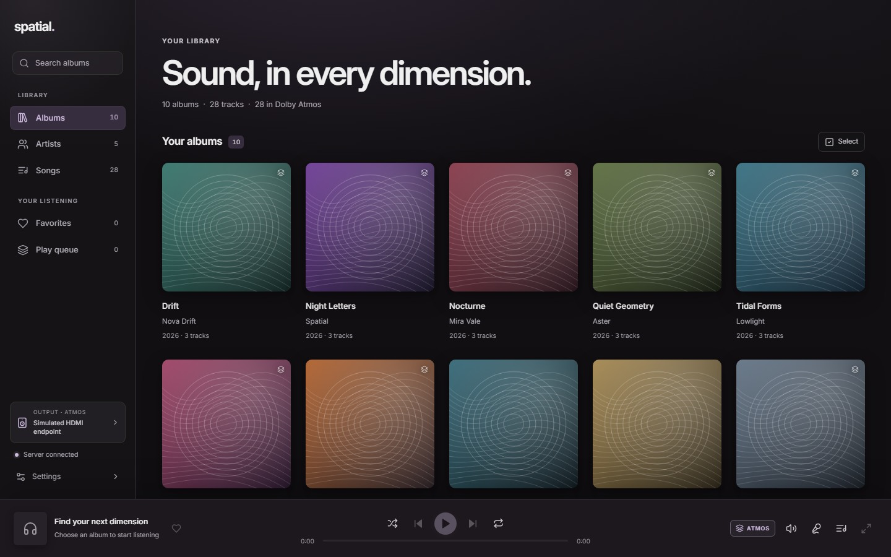
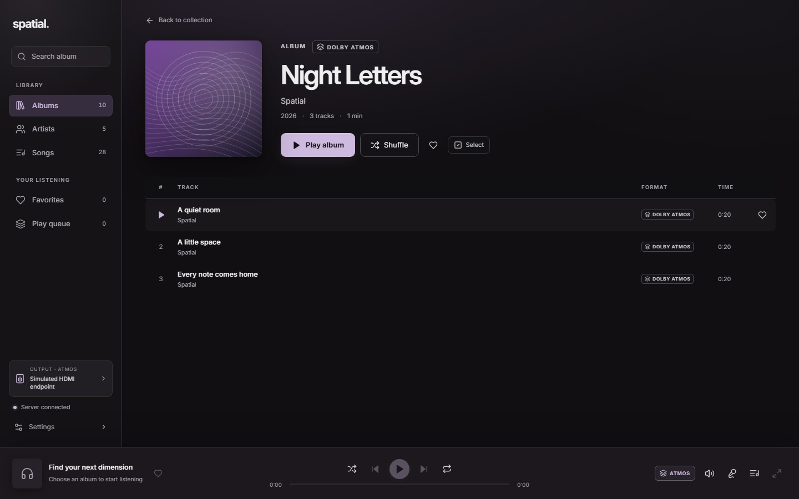
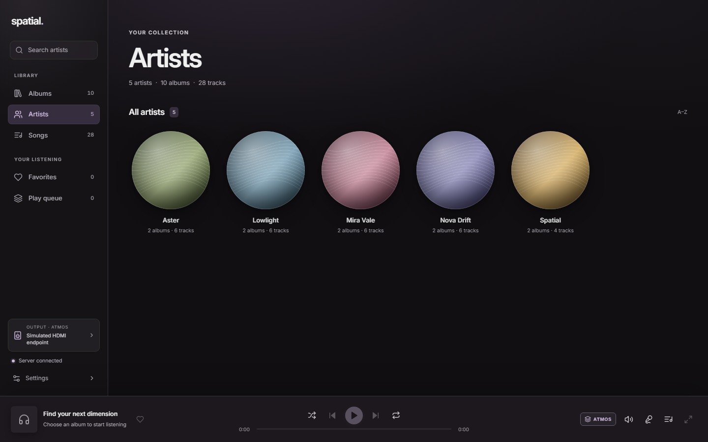
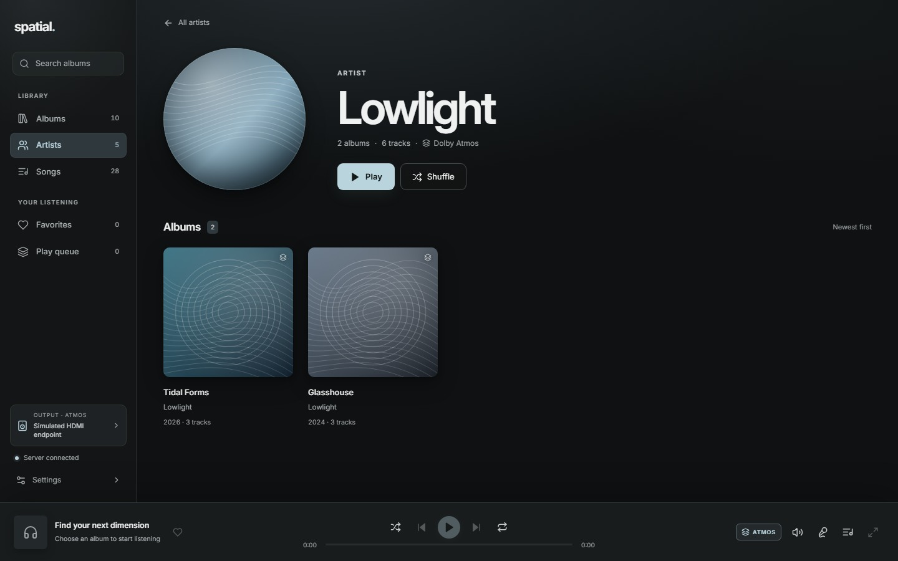
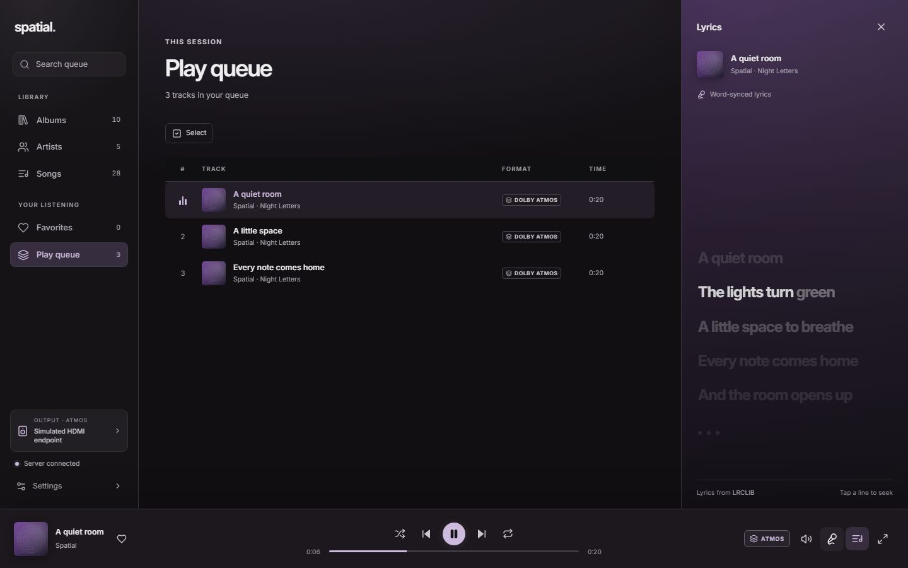
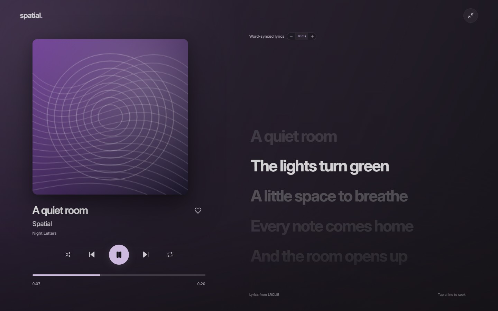
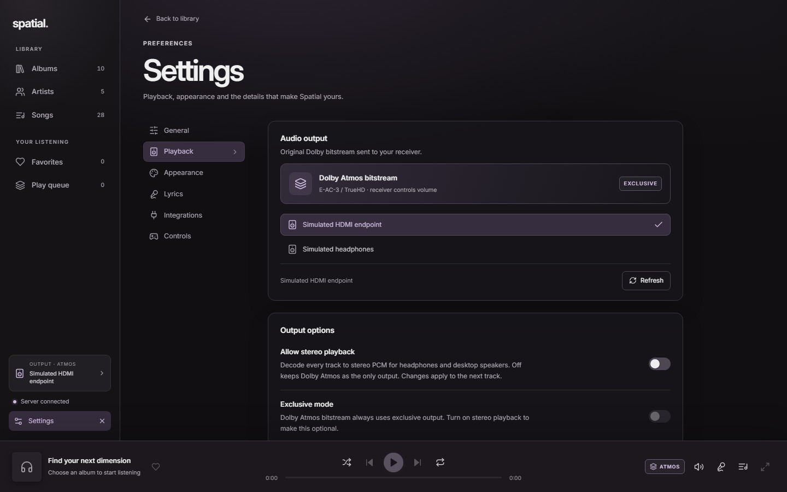
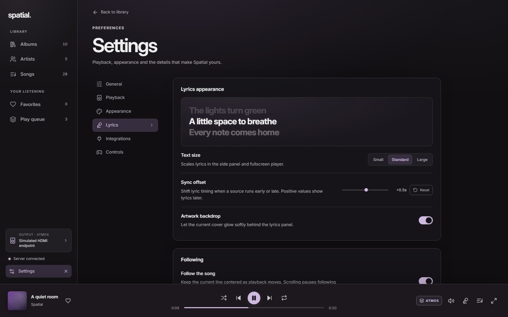
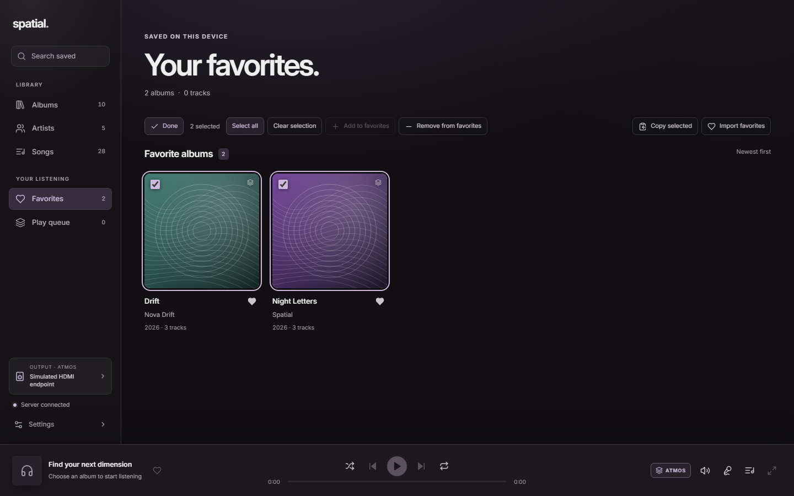
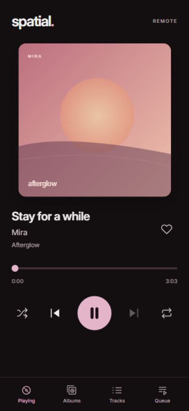

Dolby Atmos bitstream
E-AC-3 and TrueHD leave the player untouched over HDMI. The receiver decodes the object audio and controls the volume.
v0.1.18·Windows & Linux
Spatial turns the music on your server into a native listening room. Dolby Atmos on the receiver. Every artist, album and lyric in reach.
Windows x64 installer · Linux AppImage and Debian package · Free and open source

Artwork sets the palette, tags keep the order and a live catalog follows the files on your server. Search lives in the sidebar, ready when you are.

Filesystem changes reach the player without a refresh. Add an album, edit a tag and watch the library follow.
The interface takes its colours from what is playing, with smooth transitions when the record changes.
Filter the collection in place, or press Ctrl K from anywhere in the library.
Spatial builds artist pages from your tags and finds portraits from Deezer, cached on your server. Open any artist for their full discography, the albums they appear on, and a play or shuffle for all of it.


A bright active line, a wash of album art and word-by-word timing. Local TTML lyrics come first; LRCLIB fills the gaps. When a recording runs early or late, shift the whole song by up to ten seconds.


The default path keeps Dolby Atmos untouched and lets the receiver decode it. Stereo playback decodes locally for headphones, with exclusive mode and software volume when you want them.
E-AC-3 and TrueHD leave the player untouched over HDMI. The receiver decodes the object audio and controls the volume.
Decode any supported format to two channels. Choose exclusive or shared output, and set the volume in the app.




Latest release v0.1.18
Spatial is free and open source. Download a signed desktop release, or build it from source.
The desktop app needs a Spatial server pointed at your music library. Set up the server.